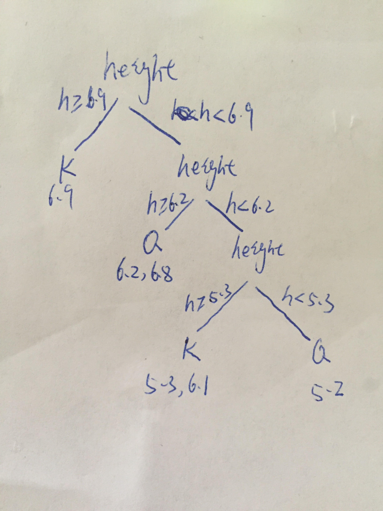

5, since we have Height<h and Heigh≥h， therefore, since we have 7 values, and 2 are the same, then we discard 5.2 which is the lowest value. Then we only need to consider 5 values of h.
Entropy(S)=−P0log2(P0)−P1log2(P1)
Since we have 7 perferences, 3 are K, 4 are Q. Then we have P0=74 , P1=73. According to formula above, we can get Entropy=0.985
Current entropy is
P0=73P1=74 then H(Y)=−P0log2(P0)−P1log2(P1)=0.985
P0=74P1=73 then H(Y)=−P0log2(P0)−P1log2(P1)=0.985
For h=6.2, h<6.2
P0=31P1=32 then H(Y)=−P0log2(P0)−P1log2(P1)=0.918
h≥6.2
P0=41P1=43 then H(Y)=−P0log2(P0)−P1log2(P1)=0.811
73∗0.918+74∗0.811=0.857
Information gain =0.985−0.679=0.129
For h=6.8,h<6.8
P0=53P1=52 then H(Y)=−P0log2(P0)−P1log2(P1)=0.971
h≥6.8
P0=21P1=21 then H(Y)=−P0log2(P0)−P1log2(P1)=1
75∗0.971+72∗1=0.979
Information gain = 0.985−0.979=0.06
For h=6.9,h<6.9
P0=11P1=0 then H(Y)=−P0log2(P0)−P1log2(P1)=0
h≥6.9
P0=31P1=32 then H(Y)=−P0log2(P0)−P1log2(P1)=0.918
76∗0.918+71∗0=0.787
Information gain =0.985−0.787=0.198
For h= 6.1,h<6.1
P0=21P1=21 then H(Y)=−P0log2(P0)−P1log2(P1)=1
h≥6.1
P0=53P1=52 then H(Y)=−P0log2(P0)−P1log2(P1)=0.971
75∗0.971+72∗1=0.979
Information gain = 0.985−0.979=0.06
For h=5.3,h<5.3
P0=11P1=0 then H(Y)=−P0log2(P0)−P1log2(P1)=0
h≥5.3
P0=21P1=21 then H(Y)=−P0log2(P0)−P1log2(P1)=1
71∗0+76∗1=0.857
Information gain = 0.985−0.857=0.128
For Gender = Male
P0=53P1=52 then H(Y)=−P0log2(P0)−P1log2(P1)=0.971
Female
P0=21P1=21 then H(Y)=−P0log2(P0)−P1log2(P1)=1
71∗1+760.971=0.975
Information gain = 0.985−0.975=0.01
Since the 6.9 contains the highest information gain, it should be the optimal root node for this dataset.

On picture
It does not always construct an optimal DT. But it gives a good approximation.It gives optimal DT for more than 50% dataset.